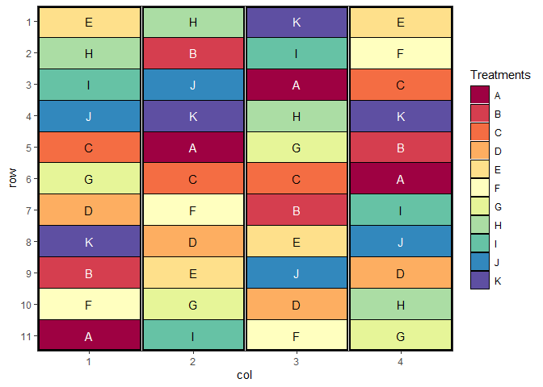

The goal of biometryassist is to provide functions to aid in the Design and Analysis of Agronomic-style experiments through easy access to documentation and helper functions, especially while teaching these concepts.
This package is a renamed version of BiometryTraining which is no longer maintained, but can still be found at https://biometryhub.github.io/BiometryTraining/
Installation
As of version 1.0.0 the biometryassist package is now on CRAN 🙌 That means that installation is as easy as running:
install.packages("biometryassist")Development version
⚠ Warning: The development version is unstable and liable to change more often than the CRAN version. It may have bugs fixed, but there may be other currently unknown bugs introduced. ⚠
Use the following code to install the latest development version of this package.
if(!require("pak")) install.packages("pak")
pak::pak("biometryhub/biometryassist@dev")
# Alternatively
if(!require("remotes")) install.packages("remotes")
remotes::install_github("biometryhub/biometryassist@dev")Using the package
Load the package and start using it with:
The package supports two main workflows:
Experimental design — generate and visualise trial layouts:
-
design()— create CRD, RCBD, Latin Square, split-plot, strip-plot, and factorial designs, with a plot of the layout and a skeletal ANOVA table -
add_buffers()— add buffer plots around treatment plots, blocks, or the trial perimeter -
export_design_to_excel()— write a design to a formatted Excel workbook
Post-model analysis and visualisation — works with models from aov, lme4, nlme, asreml, sommer, glmmTMB, afex, and more:
-
multiple_comparisons()— Tukey HSD and other multiple comparison tests with letter groupings -
pairwise_comparisons()— selected pairwise differences or general linear contrasts -
reference_comparisons()— compare all levels against a reference (Dunnett-style) -
resplot()— diagnostic residual plots -
heat_map()— spatial heat maps of trial data or residuals -
variogram()— spatial variograms for ASReml-R models
The package optionally enhances the commercial ASReml-R package. If you have a licence, install_asreml() and update_asreml() make it easy to install and keep up to date.
For details on recent changes, see NEWS.md.
Example
library(biometryassist)
# Generate a Randomised Complete Block Design with 11 treatments and 4 reps
des.out <- design(
type = "rcbd",
treatments = LETTERS[1:11],
reps = 4,
nrows = 11,
ncols = 4,
brows = 11,
bcols = 1,
seed = 42,
quiet = TRUE
)
The $satab element gives the skeletal ANOVA table for the design:
cat(des.out$satab)
#> Source of Variation df
#> =============================================
#> Block stratum 3
#> ---------------------------------------------
#> treatments 10
#> Residual 30
#> =============================================
#> Total 43Troubleshooting Installation
- If you receive an error that the package could not install because
rlangor another package could not be upgraded, the easiest way to deal with this is to uninstall the package(s) that could not be updated (remove.packages("rlang")). Then restart R, re-install withinstall.packages("rlang")and then try installingbiometryassistagain.
Citation
If you find this package useful in your work, please cite it. Run the following in R to get the citation details:
citation("biometryassist")#> To cite package 'biometryassist' in publications use:
#>
#> Nielsen S, Rogers S, Conway A (2026). _biometryassist: Functions to
#> Assist Design and Analysis of Agronomic Experiments_. R package
#> version 1.5.0, <https://biometryhub.github.io/biometryassist/>.
#>
#> A BibTeX entry for LaTeX users is
#>
#> @Manual{,
#> title = {biometryassist: Functions to Assist Design and Analysis of Agronomic Experiments},
#> author = {Sharon Nielsen and Sam Rogers and Annie Conway},
#> year = {2026},
#> note = {R package version 1.5.0},
#> url = {https://biometryhub.github.io/biometryassist/},
#> }Code of Conduct
Please note that the biometryassist project is released with a Contributor Code of Conduct. By contributing to this project, you agree to abide by its terms.
Contributing
Contributions are welcome! Please see CONTRIBUTING.md for guidelines on how to get involved.
Licence
MIT © University of Adelaide Biometry Hub. See LICENSE.md for details.